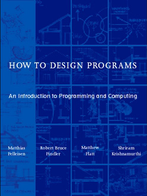
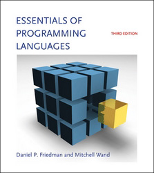
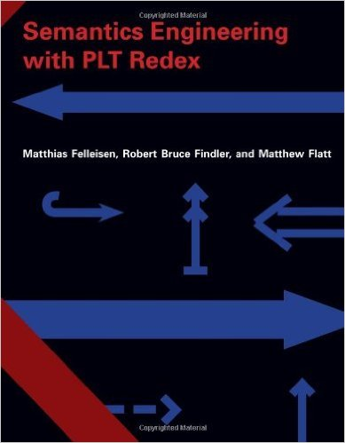
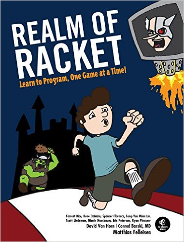
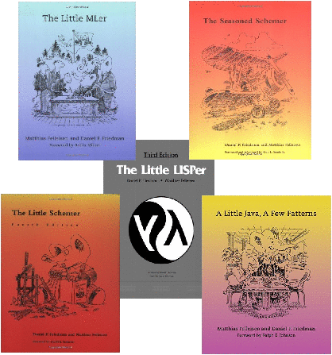

PRL Faculty & Staff write academic books, teach courses, and write more books.
o
w
t
o
D
e
s
i
g
n

Programs
How To Design Programs focuses on the program design process, distinguishing it from other introductory books. This approach fosters a variety of skills --- critical reading, analytical thinking, creative synthesis, and attention to detail. On the surface we use engaging contexts, our "hello world" program is an animation, and students have the opportunity to program games, etc.
We have spent over twenty years developing the related Program By Design curriculum and have offerings at the middle-school, high-school and university levels. Our material is even used for in-house corporate training.
This is the primary textbook for our courses CS 5010 and CS 2500.
www.htdp.org
http://www.ccs.neu.edu/home/matthias/HtDP2e/
http://www.programbydesign.org
http://www.bootstrapworld.org
Essentials of Programming Languages is a study of programming languages. Our goal is to provide a deep, working understanding of the essential concepts of programming languages. These essentials have proved to be of enduring importance; they form a basis for understanding future developments in programming languages.
Our approach is both theoretical and hands-on. The book provides views of programming languages using widely varying levels of abstraction, maintaining a clear connection between the high-level and low-level views. The text uses interpreters to express the semantics of many essential language elements in a way that is both clear and executable.
s
s
e
n
t
i
a
l
s

of Programming
Languages
e
m
a
n
t
i
c
s

Engineering with
PLT Redex
Semantics Engineering with PLT Redex is the first comprehensive presentation of reduction semantics in one volume. It also introduces the first reliable and easy-to-use tool set for such forms of semantics.
Automatic tool support is critical for rapid prototyping and modeling and this book is addressed to the working semantics engineer. With PLT Redex, semanticists can formulate models as grammars and reduction models on their computers with the ease of paper-and-pencil designs.
This text first presents a framework for the formulation of language models, focusing on equational calculi and abstract machines, then introduces PLT Redex, a suite of software tools for expressing these models as PLT Redex models. Finally, experts describe a range of models formulated in Redex.
This is the primary textbook for our course CS 7400 - Intensive Principles of Programming Languages.
- 7976 Directed Study
S 2020 Seminar in Technical Writing Mitch Wand
F 2019 Seminar in Technical Writing link Mitch Wand
F 2018 Seminar in Technical Writing link Mitch Wand - 7680 Special Topics in Computer Systems
F 2016 Programming Models for Distributed Computing link Heather Miller - 7580 Special Topics in Software Engineering
F 2019 Intensive Software, Construction and Engineering link Jan Vitek - 7480 Special Topics in Programming Languages
F 2020 Type Systems John Boyland
S 2019 Gradual Typing and Principled Language Interoperability link Amal Ahmed
S 2017 History of Programming Languages link Matthias Fellsein
F 2016 Advanced Program Analysis link Frank Tip
F 2015 Types, Contracts, and Gradual Typing link Amal Ahmed
S 2012 Type Systems link Amal Ahmed - 7400 Intensive Principles of Programming Languages
S 2020 link Amal Ahmed
S 2017 link Amal Ahmed
F 2016 link Amal Ahmed
S 2016 link Amal Ahmed
S 2015 link Amal Ahmed
S 2014 link Matthias Felleisen
F 2012 link Matthias Felleisen
F 2011 link Matthias Felleisen - 6515 Software Design and Development
S 2013 link Matthias Felleisen - 6240 Parallel Data Processing in MapReduce
F 2017 link Jan Vitek
S 2016 link Jan Vitek
S 2015 link Jan Vitek - 6050 DS Seminar in Data Science
S 2019 Expeditions in Data Science link Jan Vitek - 5500 Foundations of Software Engineering
F 2020 link Mitch Wand, Frank Tip, Jon Bell
F 2019 link Frank Tip
S 2017 link Michael Weintraub, Frank Tip - 5110 DS Introduction to Data Science
S 2017 link Jan Vitek - 5010 Program Design Paradigms
S 2017 link William D. Clinger
F 2016 link Mitch Wand, William D. Clinger, James Miller, Ezra Kilty
S 2016 link William D. Clinger, Kevin Gold
F 2015 link Mitch Wand, William D. Clinger
S 2015 link Stephen Chang
F 2014 link Mitch Wand, Stephen Chang, Jan Vitek
S 2014 link Ryan Culpepper
F 2013 link Ryan Culpepper
- 4910 Type Systems
F 2020 John Boyland - 4620 Building Extensible Systems
S 2018 Hack Your Own Language link Matthias Felleisen, Stephen Chang
S 2015 link Matthias Felleisen - 4500 Software Development
F 2020 link Matthias Felleisen, Jason Hemann
S 2020 link Jan Vitek, Jason Hemann, Ferdinand Vesely
F 2019 link Matthias Felleisen
F 2018 link Matthias Felleisen, Jason Hemann
S 2016 link Matthias Felleisen - 4410 Compilers
S 2020 link Ben Lerner
F 2019 link Olin Shivers
S 2019 link Ben Lerner
F 2018 link Olin Shivers
S 2017 link Ben Lerner
F 2013 link Amal Ahmed
S 2012 link Olin Shivers - 4400 Programming Languages
S 2020 link Matthias Felleisen
F 2018 link Jason Hemann - 4530 Fundamentals of Software Engineering
F 2020 link Frank Tip, Jon Bell - 3800 Theory of Computation
F 2015 link William D. Clinger - 3500 Object Oriented Design
F 2019 link Ben Lerner, Clark Freifeld, Alex Grob
F 2018 link Ben Lerner, Amit Shesh, Clark Freifeld
F 2016 link Ben Lerner, Amit Shesh
F 2015 link Ben Lerner - 2800 Logic and Computation
F 2020 link Jason Hemann
S 2020 link Pete Manolios, Olin Shivers - 2510 Fundamentals of Computer Science 2
S 2020 accelerated link Ben Lerner
S 2019 link Leena Razzaq, Jason Hemann, Matthew Singer
S 2019 accelerated link Ben Lerner, Matthew Singer
S 2018 link Ben Lerner, Nada Naji, Clark Freifeld, Jan Vitek, Becca MacKenzie
S 2018 accelerated link Ben Lerner, Becca MacKenzie
S 2017 link Ben Lerner, Nada Naji, Leena Razzaq, Clark Freifeld, Becca MacKenzie
S 2016 link Ben Lerner, Nada Naji, Leena Razzaq, Magy Seif El-Nasr
S 2015 link Ben Lerner, Leena Razzaq
F 2014 link Ben Lerner, Leena Razzaq
S 2014 honors link Ben Lerner - 2500 Fundamentals of Computer Science
F 2020 accelerated link Amal Ahmed, Ben Lerner
F 2020 link Amal Ahmed, Ben Lerner, Arjun Guha, John Park, Ferdinand Vesely
F 2019 accelerated link Amal Ahmed
S 2019 link Olin Shivers
F 2018 accelerated link Amal Ahmed
F 2017 link Ben Lerner, Alan Mislove, Christo Wilson, Nada Naji, Byron Wallace
F 2017 accelerated link Matthias Felleisen
S 2017 link Olin Shivers, Nat Tuck
F 2016 link Matthias Felleisen, Amal Ahmed, Ben Lerner
F 2016 accelerated link Olin Shivers
F 2015 link Olin Shivers
F 2015 honors link Ben Lerner
F 2014 link Olin Shivers, Amal Ahmed, Ben Lerner
S 2014 link Amal Ahmed
F 2013 link Matthias Felleisen, Amal Ahmed
F 2011 link Amal Ahmed
Racket is a descendant of Lisp, a programming language renowned for its elegance, power, and challenging learning curve. But while Racket retains the functional goodness of Lisp, it was designed with beginning programmers in mind and Realm of Racket is an introduction to the Racket language.
Our approach teaches programming by creating increasingly complex games. The journey begins with the Guess My Number game and coverage of some basic Racket etiquette. Next, readers dig into syntax and semantics, lists, structures, and conditionals, and learn to work with recursion and the GUI in building the Robot Snake game. Then it's on to lambda and mutant structs (and an Orc Battle), and fancy loops and the Dice of Doom. Finally, readers explore laziness, AI, distributed games, and the Hungry Henry game.
http://realmofracket.com/realmofracket.com

Realm of Racket

The Littles Series
The Littles Series open new doors of thought to everyone who wants to find out what computing is really about.
The original, Little LISPer, unfolds some of the most beautiful concepts in mathematics, computer science, and logic. The follow-on books further the notion that 'thinking about computing is one of the most exciting things the human mind can do.' This sets both The Little Schemer and its companion volume, The Seasoned Schemer, apart from other books on LISP.
The Little MLer introduces one of the most important members of the family of programming languages. ML has emerged as a natural language for software engineering courses because it provides a sophisticated and expressive module system and is the language of choice for some NU CCIS courses.
Design patterns, which moved object-oriented programming to a new level, provide programmers with a language to communicate with others about their designs. As a result, programs become more readable, more reusable, and more easily extensible. A Little Java, A Few Patterns, use a small subset of Java to introduce pattern-directed program design.